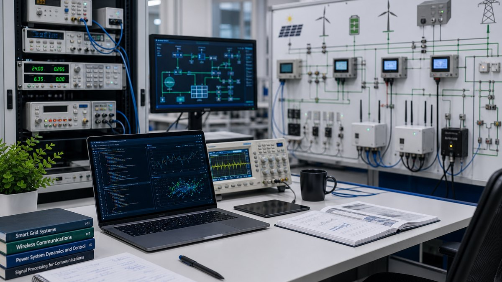

Smart Grids
Problem: Energy networks need resilience, visibility, and real-time decisions.
Method: Integrate sensing, communications, analytics, and automation.
Impact: More reliable grid operation and better demand-side intelligence.
Smart Energy Systems | Renewable Energy | AI | IoT
PhD Electrical Engineer
Researcher | Innovator | Educator
Advancing smart energy systems through artificial intelligence, IoT, renewable technologies, and secure connected infrastructure.


About
Dr. Musaad Alruwaili is an electrical engineering researcher whose work connects smart energy systems, secure device-to-device communication, IoT sensing, and renewable energy monitoring. He earned his PhD from the University of Toledo, with dissertation work on optimizing and securing 5G device-to-device communication.
His academic path includes electrical engineering degrees from Gannon University and doctoral research at the University of Toledo. His professional journey spans Advance Energy Company, Fluor Arabia, Saudi Electricity Company, and earlier communications maintenance work, giving his research a practical foundation in control systems, SCADA, electrical project engineering, and field infrastructure.
Research
Problem: Energy networks need resilience, visibility, and real-time decisions.
Method: Integrate sensing, communications, analytics, and automation.
Impact: More reliable grid operation and better demand-side intelligence.
Problem: Renewable sources introduce variability and monitoring challenges.
Method: Combine remote measurements with control and forecasting workflows.
Impact: Practical renewable integration for universities, utilities, and industry.
Problem: Power systems produce more data than conventional tools can use.
Method: Apply machine learning to prediction, diagnostics, anomaly detection, and optimization.
Impact: Better decisions across operation, maintenance, and planning.
Problem: Distributed assets need affordable, persistent, low-maintenance visibility.
Method: Design connected sensor architectures for energy and industrial environments.
Impact: Field-ready monitoring for laboratories, pilots, and remote assets.
Problem: Sensor networks must remain secure, efficient, and dependable.
Method: Study secure communication, device coordination, and network-aware data collection.
Impact: Stronger connected infrastructure for energy and smart-city systems.
Publications
Co-authored with Junghwan Kim and Jared Oluoch. The work proposes a security framework for 5G D2D communication that combines secure matching, privacy protection, AI-enhanced key generation, adaptive jamming, and MATLAB-based validation.
View on IEEE XploreCo-authored with Junghwan Kim and Jared Oluoch. The paper studies D2D power allocation and matching to improve 5G network efficiency, manage interference, and support reliable proximity-based communication.
View on IEEE XploreDoctoral dissertation supervised at the University of Toledo, connecting optimization, security, privacy, and resource allocation for next-generation device-to-device communication.
View dissertation recordProjects

EPA-funded student design project at Gannon University, with Dr. Musaad Alruwaili listed as co-investigator. The project developed a prototype concept for converting agricultural residue, especially grape pomace, into renewable fuel through torrefaction and pelletization, with a remote command, control, and monitoring center.

Wireless and IoT sensing for distributed energy assets, condition monitoring, and real-time decision support.

Machine learning concepts for forecasting, optimization, anomaly detection, and intelligent grid operation.

Monitoring and control strategies that help solar, biomass, and distributed generation operate with grid awareness.
Experience

Where: Wa'ad Al Shamal industrial energy environment, supporting electrical engineering work connected to large-scale power and infrastructure systems.
What: Applies electrical engineering, project coordination, field review, and system-readiness thinking to support reliable energy infrastructure. The role builds on prior control systems and SCADA experience in major industrial projects.
Value: Connects practical field engineering with smart energy, monitoring, and future-ready power systems.
Jun. 2015 - Mar. 2018 | Turaif, Saudi Arabia
Where: Wa'ad Al Shamal Project, one of Saudi Arabia's major northern industrial development programs.
What: Reviewed functional design specifications for project packages, supported system installation implications, and worked with hardware/software requirements for control-system delivery.
 Sep. 2006 - Sep. 2007 | Aljouf, Saudi Arabia
Sep. 2006 - Sep. 2007 | Aljouf, Saudi Arabia
Where: Saudi Electricity Company operations in Aljouf.
What: Installed and calibrated ACSE and ABTS systems, supporting automatic changeover and bus-transfer functionality for electrical infrastructure.
 Mar. 2005 - Sep. 2006 | Aljouf, Saudi Arabia
Mar. 2005 - Sep. 2006 | Aljouf, Saudi Arabia
Where: Communications service and technical maintenance environment.
What: Operated and maintained communication service between shelters, repaired and maintained test equipment, and developed hands-on communications infrastructure discipline.
Education

Doctoral research focused on optimizing and securing 5G device-to-device communication, with emphasis on security, privacy, resource allocation, and intelligent connected systems.
Academic work connected to electrical engineering and EPA P3 renewable energy research, including the biomass energy-source generator and remote monitoring project.
Strengthened academic English, graduate preparation, and communication skills before doctoral study in the United States.
Teaching
Blog
A practical view of prediction, automation, and operator trust.
Monitoring, controls, storage, communications, and planning.
Lessons on research discipline, publication, and applied impact.
Media and Talks
Talks on 5G, D2D communication, privacy, and intelligent connected systems.
Professional sessions for students, researchers, and industry partners.
A dedicated space for future honors, grants, invited panels, and public media mentions.
Contact
Available for research collaborations, consulting, graduate supervision, industry partnerships, and speaking engagements.